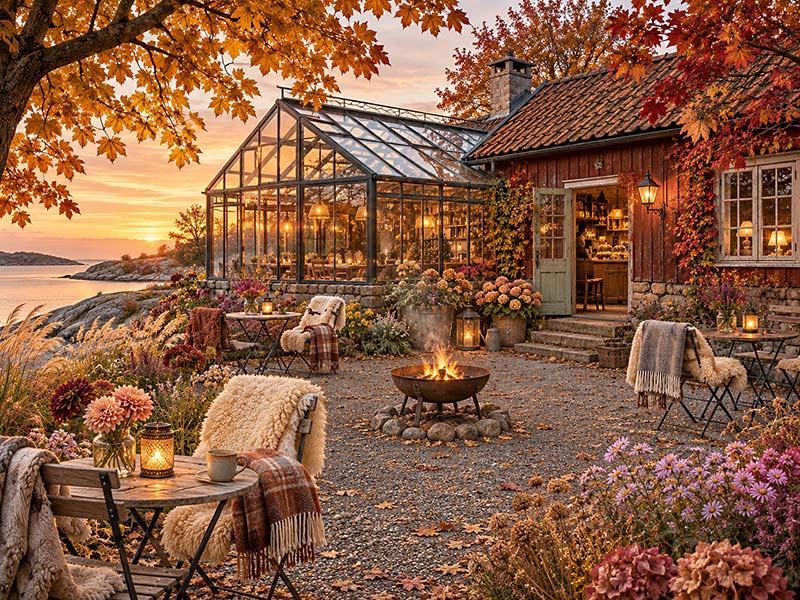
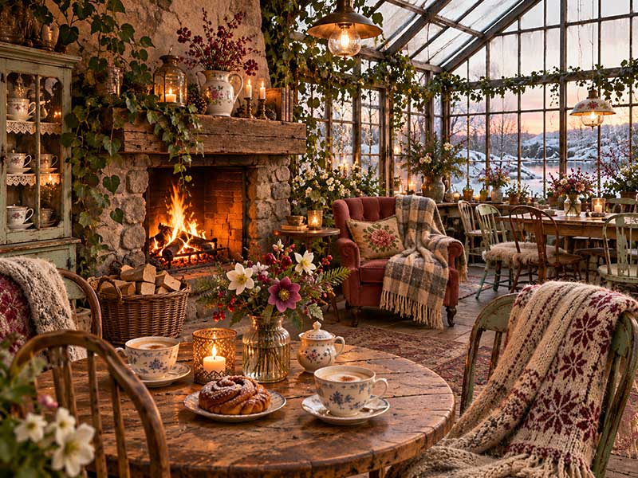

"Välkomna till vårt paradis, vårt Café Dahlia"
Med värme, Siv & Maya
Ni hittar oss vid Världens Ände i Arkösund, utanför Norrköping. Här finner ni en mysig atmosfär, färska blommor, mat och fika. Vårt mål är att skapa en plats där människor kan samlas, koppla av och samla energi. Låt den salta havsluften rena dig och njut av havets ljud där havet glittrar framför dig.
Kom ensam eller med vänner, hos oss får alla livets stunder plats!


